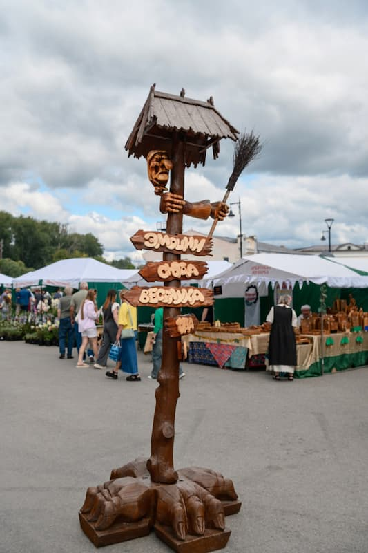
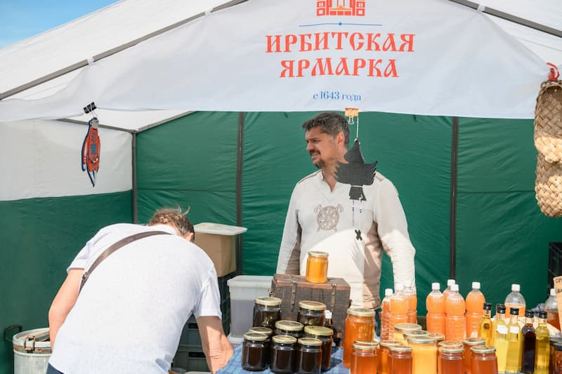
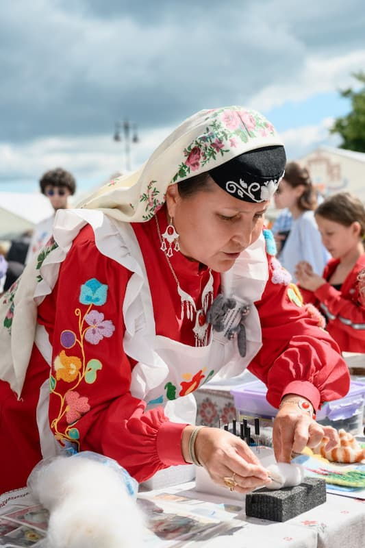
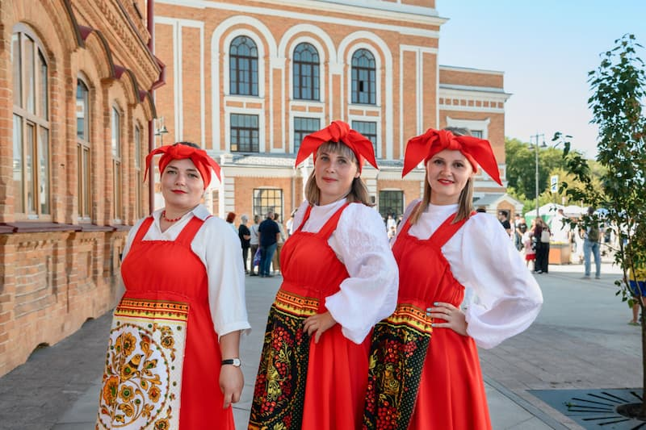
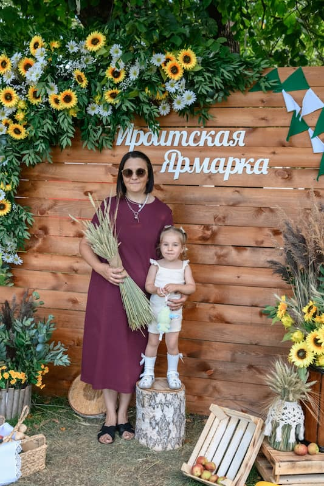

Ирбитская ярмарка вновь стала ярким событием, объединившим тысячи гостей и участников. Типография «Лазурь» представила свою сувенирную продукцию, и особенно тепло публика встретила наши новинки!

Хиты продаж:

Мы благодарим всех, кто выбирал наши сувениры и делился своими впечатлениями. Ваша поддержка вдохновляет нас на новые идеи!

Хотите также порадовать своих клиентов качественными сувенирами? Заказывайте оптовые партии в типографии «Лазурь»! Мы поможем с разработкой дизайна и предложим выгодные условия.

Создаём сувениры с душой — для вас и ваших клиентов!
P.S. Уже готовим новые коллекции сувениров к следующему сезону. Следите за новостями!